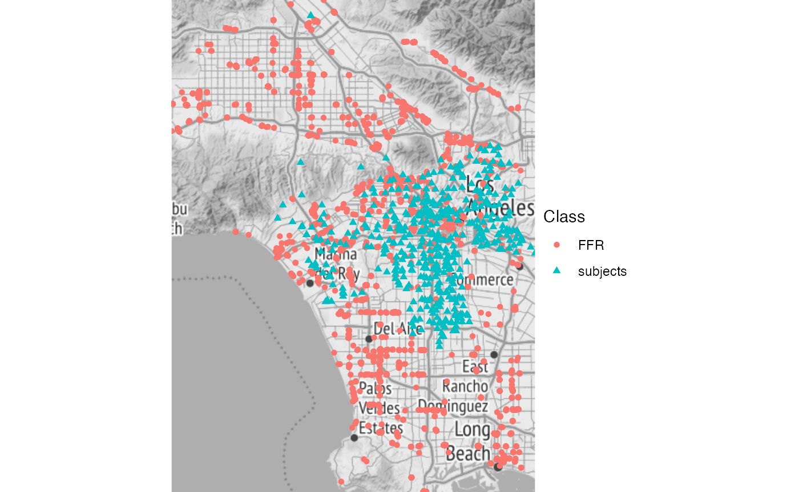
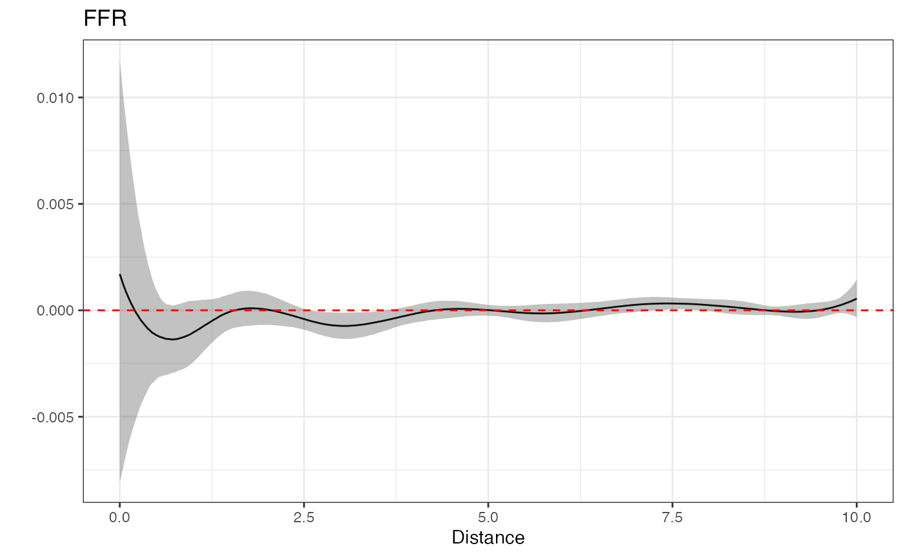

The bentobox package ecosystem contains four packages that facilitate working with and modeling built environment(BE) data:
rbenvo A suite of objects and tools for working with the relational subject - BE data.rsstap: A package for modeling the population level effect of BE features (BEFs) on subjects: \(E[g(\mu_i)] = X_i^{T}\delta + f(BEF)\)
bendr: A package for estimating clusters of spatial distributions of a BEF around subjects \(f(d) = \int \mathcal{K}(d|\theta)dG(\theta)\).rstapDP: A package for modeling the cluster level effects of BEFS on subjects: \(E[g(\mu_i)] = X_i^{T}\delta + f_i(BEF)\)
The intent of packaging this software together is so that it may provide an “all-in-one” approach for those wishing to perform analysis on BEFs. In this vignette we’ll briefly show how the functions from these packages support one another and offer different methods of analyzing the environments in which we live.
We’ll begin this demonstration by first loading bentobox which will, akin to the tidyverse, print out a message of which packages have been loaded, and any overlapping(or conflicting) functions which will be masked.
library(bentobox) #> ── Attaching packages ───────────────────────────────────────────── bentobox 0.1.0 ── #> ✓ rbenvo 1.0.4 ✓ rstapDP 0.1.4 #> ✓ rsstap 0.1.2 ✓ bendr 1.0.3 #> ── Conflicts ──────────────────────────────────────────────── bentobox_conflicts() ── #> x rbenvo::filter() masks stats::filter() #> x Rcpp::prompt() masks utils::prompt()
For this vignette we’ll use the California school obesity and Fast Food Restaurant (FFR) data, which have code to illustrate how they were downloaded and packaged here. We can create this dataset using the simple create_CA_benvo() command from rbenvo.
bdf <- create_CA_benvo() #> Linking to GEOS 3.8.1, GDAL 3.1.1, PROJ 6.3.1
Using the active API paradigm, popularized in the tidygraph package, we can take a look at the current active BEF, which contains the pairwise school-FFR distances.
bdf #> Active df: FFR #> # A tibble: 489,034 x 3 #> cdscode osm_id Distance #> <chr> <chr> <dbl> #> 1 19101991933399 60713740 5.91 #> 2 19647330100289 60713740 9.89 #> 3 19647330100867 60713740 9.55 #> 4 19647330101683 60713740 5.48 #> 5 19647330102426 60713740 6.37 #> 6 19647330106435 60713740 9.36 #> 7 19647330108886 60713740 7.89 #> 8 19647330109439 60713740 3.22 #> 9 19647330110304 60713740 8.82 #> 10 19647330111658 60713740 5.91 #> # … with 489,024 more rows
In a similar manner, we can look at the relevant subject and bef data.
bdf %>% activate(subject) #> Active df: subject #> Simple feature collection with 698 features and 7 fields #> geometry type: POINT #> dimension: XY #> bbox: xmin: -118.4958 ymin: 33.90556 xmax: -118.136 ymax: 34.29046 #> geographic CRS: WGS 84 #> # A tibble: 698 x 8 #> cdscode Charter Grade N Percent NoStud_Overweig… NoStud_NotOverw… #> * <chr> <fct> <fct> <dbl> <dbl> <dbl> <dbl> #> 1 141014… Charter 9 19 47.4 9 10 #> 2 191019… Charter 7 92 35.9 33 59 #> 3 191019… Charter 9 44 52.3 23 21 #> 4 191019… Tradit… 9 99 19.2 19 80 #> 5 196473… Charter 5 45 33.3 15 30 #> 6 196473… Charter 5 101 59.4 60 41 #> 7 196473… Charter 7 127 59.4 75 52 #> 8 196473… Charter 5 101 46.5 47 54 #> 9 196473… Charter 7 127 46.5 59 68 #> 10 196473… Charter 5 65 46.2 30 35 #> # … with 688 more rows, and 1 more variable: geometry <POINT [°]>
bdf %>% activate(bef_FFR) #> Active df: bef_FFR #> Simple feature collection with 6621 features and 2 fields #> geometry type: POINT #> dimension: XY #> bbox: xmin: -118.644 ymin: 33.73657 xmax: -118.1552 ymax: 34.30866 #> geographic CRS: WGS 84 #> # A tibble: 6,621 x 3 #> Name osm_id geometry #> * <chr> <chr> <POINT [°]> #> 1 <NA> 60713740 (-118.1829 34.11479) #> 2 Yoshinoya 72448982 (-118.216 34.07622) #> 3 Jack in the Box 72448995 (-118.216 34.07669) #> 4 Baja Fresh 344723703 (-118.3165 34.18557) #> 5 Jersey Mike's Subs 344723888 (-118.3163 34.18562) #> 6 Taco Bell 344727689 (-118.3191 34.18821) #> 7 Baja Fresh 349339405 (-118.3275 34.09819) #> 8 Chipotle 349340479 (-118.3768 34.07442) #> 9 Subway 354910320 (-118.3149 34.26024) #> 10 <NA> 358019457 (-118.3386 34.19783) #> # … with 6,611 more rows
If we’d like to visualize these data, one easy method would be to use the plot_map method available from rbenvo, for those benvo's that have sf information available, as we do here.
plot(bdf,'map') + ggplot2::theme_bw() + ggplot2::theme_void() #> Source : http://tile.stamen.com/terrain/10/174/407.png #> Source : http://tile.stamen.com/terrain/10/175/407.png #> Source : http://tile.stamen.com/terrain/10/174/408.png #> Source : http://tile.stamen.com/terrain/10/175/408.png #> Source : http://tile.stamen.com/terrain/10/174/409.png #> Source : http://tile.stamen.com/terrain/10/175/409.png #> Coordinate system already present. Adding new coordinate system, which will replace the existing one.
 This spatial visulization shows that most of the subjects (schools in our case) are clustered iwthin the interior of Los Angeles, as one might expect. However, we have FFRs both within and far away from L.A, though notably not very far east of the city. This could lead to an unintended edge effect. We’ll ignore this here, since we’re only interested in showing and modeling these data for illustrative purposes, but this would be of greater concern in an analysis intended to be more authoritative.
The first model we can fit to these data is the spatial aggregated predictor model, available via rsstap, which takes the following form for our data: \[
\text{logit}(P(\text{obesity}|b_i)) = \mathbf{X}_i^T\mathbf{\delta} + f(FFR_i) + b_i\\
f(FFR_i) = \sum_{d \in \mathcal{D}}\sum_{l=1}^{10}\beta_l\phi_l(d)\\
b_i \sim N(0,\sigma^2_b).
\]
This model can be fit via the following R code.
fit <- sstap_glmer(cbind(NoStud_OverweightObese,NoStud_NotOverweightObese) ~ Charter + Grade + sap(FFR) + (1|cdscode), benvo=bdf, family=binomial())
Similarly, the primary effect of interest - the FFR effect, can be plotted using plot.
plot(fit)

While this is not intended to be an authoritative result, as stated previously, the positive association between FFR exposure and childhood obesity is, at least, in line with what one might expect.
We could take this modeling strategy further, by estimating clusters of spatial distributions in FFR occurrence around schools via bendr, or identify clusters of FFR effects via rstapDP, however, we’ll end this vignette here, leaving the links to those packages as a more in-depth resource for those interested in how those models are formulated.
The take-home message of this vignette is that by combining the custom modeling strategies of rsstap,bendr and rstapDP along with the intuitive tidygraph-like data structure available in rbenvo, the bentobox ecosystem offers those interested in studying the built environment a fundamental set of tools with which to analyze built environment data.